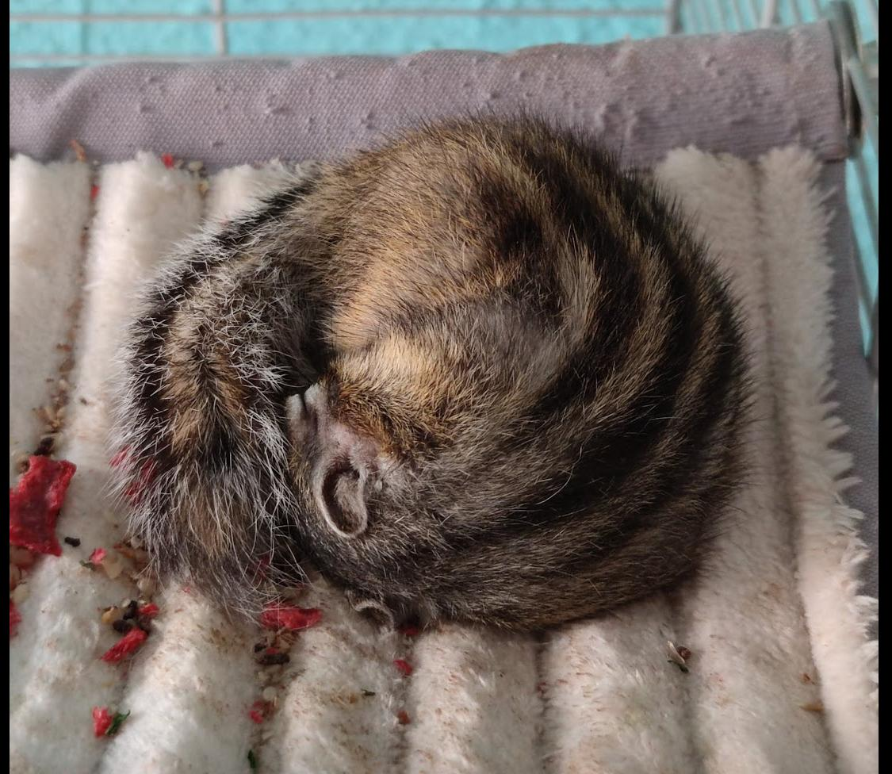

HARU
Haru es una ardilla Coreana, tiene 9 años y es el más mayor de todos, fue el primero en llegar.
Tipo de alimentación:
- Mezcla de semillas:
- Lino
- Mijo
- Trigo
- Avena
- Maiz
- verduras tales como:
- Tomate
- Pimiento rojo
- Pimiento verde
- Zanahoria
- Calabacín
- lechuga
- Alguna que otra chuche
- Frutos secos:
- Nueces
- Piñones
- Pistachos
- Pipas
- Avellanas
- Fruta:
- Manzana
- Uva
- Moras
- Arándanos
Cuidados:
- Hemos tenido bastante suerte y no hemos necesitado llevarle al veterinario demasiado.
- Las ardillas en general son bastante independientes, por lo tanto tampoco es necesario estar muy pendiente de allas.
- Aunque sean pequeñas necesitan un espacio bastante amplio para vivir.